arima.sim(list(order=c(0,1,1), ma=c(-0.5)), n=150)Slide 7 — ARIMA and Exponential Smoothing และใบงาน ARMA_properties
Lesson 5–6 ให้ตัวละครครบแล้ว คือ AR, MA, ARMA และ ARIMA บทนี้คือวิธีใช้ตัวละครเหล่านั้นกับข้อมูลจริงหนึ่งชุด ตั้งแต่ดูกราฟจนได้ค่าพารามิเตอร์ เริ่มจากความเชื่อมโยงที่น่าแปลกใจว่า ARIMA(0,1,1) ให้ค่าพยากรณ์เดียวกับ simple exponential smoothing ที่ α = 1 + θ ต่อด้วย transformation ซึ่งต้องทำเมื่อความแกว่งโตตามเวลา โดย take log ก่อน difference และเลือกด้วย Box-Cox จากนั้นคือ identification ที่ใช้ ACF, PACF, EACF, ADF และ AIC/BIC หาโมเดลที่น่าจะเป็นไว้ 2–3 ตัว แล้วตรวจว่าโมเดลมีความหมายด้วยเงื่อนไข invertibility และ causality พร้อมปัญหา parameter redundancy สุดท้ายคือ estimation ทั้ง method of moments (Yule-Walker) ที่คำนวณมือได้ และ MLE ที่ R ใช้จริง
ใบงาน ARMA_properties ที่แจกใน Class 6 เริ่มด้วยหน้าทบทวนที่เว้นว่างให้เติมเอง หน้าแรกถาม γ(1) และ γ(2) ของ AR(1) \(X_t=\phi_1X_{t-1}+w_t\) ซึ่งจาก Lesson 5 คือ \(\gamma(1)=\phi_1\gamma(0)\) และ \(\gamma(2)=\phi_1^2\gamma(0)\) โดย \(\gamma(0)=\sigma^2/(1-\phi_1^2)\) จึงสรุปเป็น \(\gamma(h)=\phi_1^h\gamma(0)\) และ \(\rho(h)=\phi_1^h\) ส่วนช่อง "PACF for AR(1)" คือ \(\phi_{11}=\phi_1\) และ \(\phi_{hh}=0\) เมื่อ h ≥ 2 เช่น φ₁ = 0.6 ได้ ACF 0.6, 0.36, 0.216 แต่ PACF 0.6, 0, 0 หน้าที่สองให้เติมนิยาม PACF และตาราง ACF/PACF ของสามโมเดล ซึ่งจาก Lesson 6 คือ \(\phi_{hh}\) เป็น correlation ของ \(X_t\) กับ \(X_{t-h}\) หลังตัดผลของค่าระหว่างกลาง AR(p) มี ACF tail off และ PACF ตัดหลัง lag p MA(q) มี ACF ตัดหลัง lag q และ PACF tail off ส่วน ARMA(p,q) tail off ทั้งคู่ sample PACF ใช้ pacf() และเส้นประ \(\pm2/\sqrt n\) เหมือน ACF
ARIMA ทบทวนได้ดีที่สุดด้วย simulation1 ซึ่งมีประโยชน์สองข้อ คือจำลองสถานการณ์เพื่อศึกษาว่าแต่ละโมเดลมีแบบแผนอย่างไร และเพื่อรู้ว่าข้อมูลจริงที่มีแบบแผนแบบนี้ตรงกับโมเดลไหน2
arima.sim(list(order=c(0,1,1), ma=c(-0.5)), n=150)IMA(1,1) ในโค้ดนี้มี θ = −0.5 ACF ของอนุกรมเดิมคือ 0.934, 0.899, 0.849 และยังเหลือ 0.537 ที่ lag 10 ลดลงช้ากว่า AR(p) เสียอีก3 หลัง difference ครั้งเดียว ACF เหลือแค่ lag 1 = −0.376 แล้วอยู่ในเส้น (0.099, 0.007) ตรงกับ MA(1) ที่ θ = −0.5 ซึ่งมีค่าทฤษฎี \(-0.5/1.25=-0.4\) ฟิต arima(ima11, order=c(0,1,1)) ได้ ma1 = −0.360 (s.e. 0.072) ซึ่งห่างจาก −0.5 ราวสองเท่าของ s.e. ข้อมูล 150 ค่าจึงยังให้ค่าประมาณคลาดได้

ma = c(-0.3, 0.3)IMA(2,2) มี trend แรงกว่า4 ACF ของอนุกรมเดิมคือ 0.98, 0.96, 0.94 และหลัง difference ครั้งแรกยังเป็น 0.960, 0.929, 0.886 ลดช้าเหมือนเดิม แปลว่ายังมี trend เหลือ หลัง difference ครั้งที่สองได้ −0.247, 0.325 แล้ว 0.001, −0.015 จึงเป็น MA(2) ค่าทฤษฎีคือ \(\rho_1=(-0.3-0.09)/1.18=-0.331\) และ \(\rho_2=0.3/1.18=0.254\) simulation "อาจไม่ perfect รันใหม่อาจชัดกว่า"
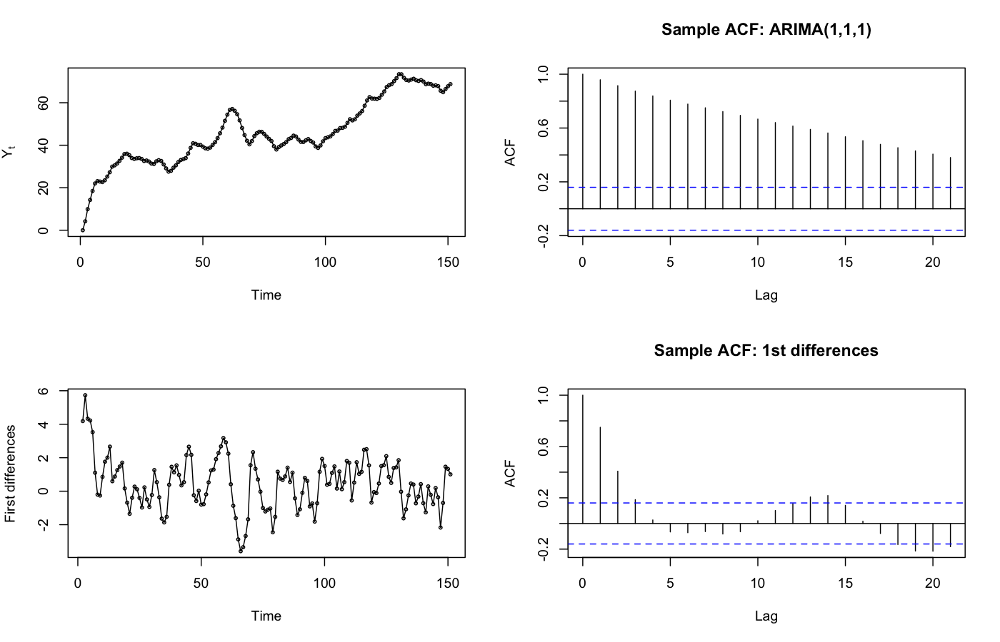
ar = 0.5, ma = 0.5 (ส่วน Extra ของ R_codes)ส่วน Extra ของโค้ดคือ ARIMA(1,1,1) ซึ่งหลัง difference ได้ ARMA(1,1) ที่ ACF ไม่ตัด คือ 0.750, 0.407, 0.185, 0.027 (ทฤษฎี 0.714, 0.357, 0.179, 0.089 ลดทีละครึ่งตาม φ = 0.5) และ PACF ก็ไม่ตัดชัด คือ 0.750, −0.353, 0.096, −0.146 นี่คือกรณีที่สองส่วน "mix กัน" จนอ่านจาก ACF/PACF ยาก และเป็นเหตุผลของ AIC/BIC และ EACF ในตอนที่ 3–4
Box-Jenkins กับ exponential smoothing เป็นคนละโมเดลที่มาจากแนวคิดต่างกัน และ MA ของ smoothing ไม่ใช่ MA ของ Box-Jenkins แต่บางค่าของ p, d, q สองฝั่งเทียบกันได้5 ข้อสอบเก่าเคยให้โมเดล ARIMA(0,1,1) แล้วให้ประมาณค่า α ของ exponential smoothing6 กุญแจของการพิสูจน์คือมอง \(w_{t+1}\) เป็นความคลาดเคลื่อนของการพยากรณ์ เหมือน residual \(e_t=Y_t-\hat Y_t\) ใน regression7 ซึ่งทำให้แทนค่าที่สังเกตไม่ได้ด้วยค่าที่คำนวณได้
\(X_t-X_{t-1}=w_t+\theta w_{t-1}\) จึงได้ \(X_{t+1}=X_t+w_{t+1}+\theta w_t\)
\(w_{t+1}=X_{t+1}-\hat X_{t+1}\)
\(X_{t+1}=X_t+X_{t+1}-\hat X_{t+1}+\theta w_t\) ตัด \(X_{t+1}\) ทั้งสองข้าง ได้ \(\hat X_{t+1}=X_t+\theta w_t\)
\(\hat X_{t+1}=X_t+\theta(X_t-\hat X_t)=(1+\theta)X_t-\theta\hat X_t\)
จะได้ \(-\theta=1-\alpha\) และ \(\hat X_{t+1}=\alpha X_t+(1-\alpha)\hat X_t\) ซึ่งคือ \(F_{t+1}=\alpha X_t+(1-\alpha)F_t\) ของ Lesson 4 "ถ้าจำไม่ได้ไปเปิดสไลด์ต้น ๆ"
สไลด์สรุปว่า "Optimal Exponential Smoothing in R" ทำได้โดยฟิต ARIMA(0,1,1) แล้วแปลง θ เป็น α เพราะพารามิเตอร์สองฝั่งคำนวณเทียบกันได้8 ตรวจกับข้อมูล IMA(1,1) ข้างบน arima(ima11, order=c(0,1,1)) ได้ θ̂ = −0.3602 จึงคาดว่า α = 1 − 0.3602 = 0.6398 และ ets(ima11, model="ANN") ได้ α̂ = 0.6376 ค่าพยากรณ์ถัดไปคือ 9.0028 และ 9.0041 แทบเท่ากัน ต่างเล็กน้อยเพราะสองคำสั่งเริ่มต้นและ optimize ต่างกัน ในทำนองเดียวกัน Holt (double exponential smoothing) ใช้สองน้ำหนักสำหรับ level และ trend ซึ่ง level คือ SES ของข้อมูล และ trend คือ SES ของผลต่างครั้งแรก จึงเทียบได้กับ ARIMA(0,2,2) ที่ไม่มีค่าคงที่ โดยไม่ลงรายละเอียดการพิสูจน์9 เหตุผลเชิงความหมายคือ Holt ต้อง difference สองครั้งเพราะพยากรณ์เป็นเส้นตรงที่ความชันก็เปลี่ยนได้ และ MA(2) หลัง difference สองครั้งก็คือสองน้ำหนัก α และ β
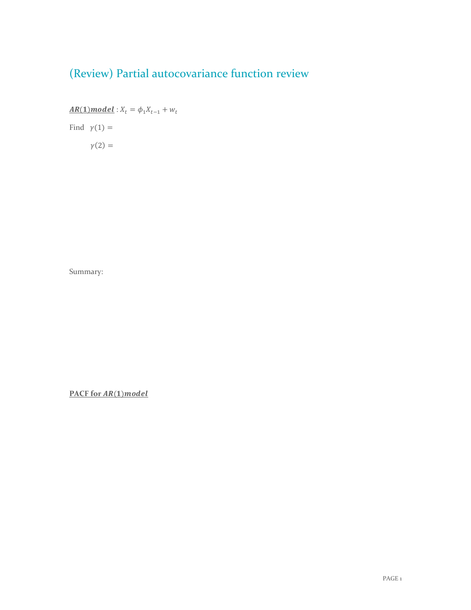
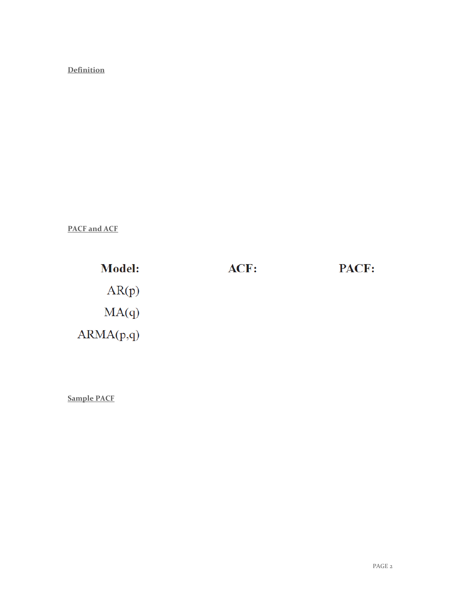

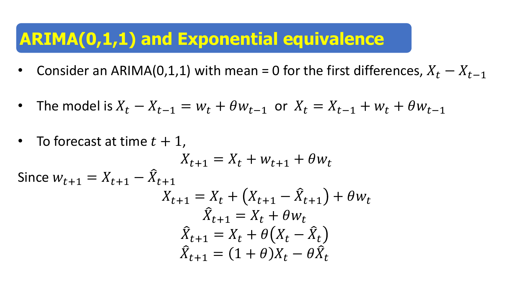


อนุกรมไม่นิ่งเกิดจากสองสาเหตุหลัก1011 สาเหตุแรกคือ trend ซึ่งทำให้ ACF ลดช้าและแก้ด้วย differencing สาเหตุที่สองคือความแกว่งที่ไม่คงที่ (non-constant variance) ซึ่ง differencing แก้ไม่ได้ transformation จึงเป็นหัวข้อที่สำคัญมาก และหลักคือทำให้นิ่งก่อนแล้วจึงศึกษาเชิงลึก ไม่ว่าจะใช้โมเดลไหน ความแกว่งที่คงที่เทียบได้กับ homoscedasticity ใน regression ถ้าช่วงแรกแกว่งน้อยแต่ช่วงหลังแกว่งมากคือ heteroscedasticity ซึ่งเป็นสัญญาณของ lack of fit ด้วย เพราะช่วงที่แกว่งมากคือช่วงที่โมเดลพยากรณ์ไม่ดี12 วิธีที่ง่ายที่สุดคือ log ซึ่งบีบข้อมูล เช่น ยอดขาย 100 กับ 110 ต่างกัน 10 ส่วน 1,000 กับ 1,100 ต่างกัน 100 ความแกว่งดูโตขึ้นสิบเท่า แต่หลัง log ทั้งสองคู่ต่างกัน \(\ln1.1=0.095\) เท่ากัน ความแกว่งที่เป็นสัดส่วนจึงกลายเป็นคงที่ สไลด์ย้ำว่า transformation เป็นขั้นแรก ทำก่อน differencing และหลังจากนั้นต้องสร้างโมเดลกับ log X_t ไม่ใช่ X_t13
Box-Cox (1964) รวม power transformation ไว้ในสูตรเดียว \(T(X_t)=(X_t^\lambda-1)/\lambda\) เมื่อ λ ≠ 0 λ = 1/2 คือ \(\sqrt x\) และ λ = 1/10 คือ \(x^{1/10}\) (หลังเลื่อนและย่อขนาด) จุดที่ต้องระวังคือ λ = 0 ไม่ใช่ x⁰ แต่เป็น ln x14 เพราะเมื่อ λ → 0 \((x^\lambda-1)/\lambda\to\ln x\) เช่น x = 10 และ λ = 0.001 ได้ \((10^{0.001}-1)/0.001=2.3052\) ใกล้ \(\ln10=2.3026\) และ λ = 1 คือ x − 1 ซึ่งแทบไม่เปลี่ยนรูปข้อมูล log ดีกว่า √ เพราะแปลงกลับด้วย exponential ได้ง่าย และค่าที่แปลงกลับไม่ติดลบ เหมาะกับยอดขาย15 ส่วน λ อย่าง 1/10 หรือ 1/6 "แปลงกลับยากและความหมายแปลยาก" BoxCox.ar() จาก package TSA หาค่า λ ที่ทำให้ likelihood สูงสุดพร้อมช่วงเชื่อมั่น 95% กฎคือถ้าช่วงคลุม 0 ให้ใช้ log ถ้าไม่คลุม 0 ต้องใช้ transformation รูปแบบอื่น16 คำสั่งนี้รันนานเพราะต้องประมาณ MLE ซ้ำหลายครั้ง17

ข้อมูลตัวอย่างคือ electricity ใน TSA ซึ่งเป็นการใช้ไฟฟ้ารายเดือนของสหรัฐฯ มกราคม 1973 ถึงธันวาคม 2005 รวม 396 เดือน มีทั้ง trend และ seasonal18 และความแกว่งรอบเส้น trend กว้างขึ้นในช่วงหลัง ส่วนเบี่ยงเบนมาตรฐานของ 5 ปีแรก (1973–1977) คือ 14,408 แต่ของ 5 ปีสุดท้าย (2001–2005) คือ 31,401 มากกว่าสองเท่า สาเหตุส่วนหนึ่งคือระดับที่สูงขึ้น ซึ่งเป็นกรณีที่ log แก้ได้ กราฟ log-likelihood เป็นรูปโค้งคว่ำ ค่าสูงสุดอยู่ที่ λ = −0.1 และช่วงเชื่อมั่น 95% คือ −0.4 ถึง 0.2 ช่วงนี้คลุม 0 จึงใช้ log19 ค่า λ = 1 (ไม่แปลง) อยู่นอกช่วงไกลมาก ยืนยันว่าต้องแปลงข้อมูลชุดนี้

หลัง log ความกว้างของการแกว่งตามฤดูกาลใกล้เคียงกันตลอดช่วง ปัญหา non-constant variance หายไป แต่ trend ขาขึ้นยังอยู่ ขั้นถัดไปจึงเป็น differencing20 คำถามที่ถามในห้องคือ log ก่อนหรือ difference ก่อน คำตอบคือ log ก่อน แล้วค่อย difference21 อีกเหตุผลคือถ้า difference ก่อน ค่าที่ได้ติดลบได้ ซึ่ง log ไม่ได้ และ difference ของ log \(\ln X_t-\ln X_{t-1}=\ln(X_t/X_{t-1})\) คืออัตราการเติบโตโดยประมาณ แปลความง่าย ตอนพยากรณ์ต้องแปลงกลับด้วย exponential22
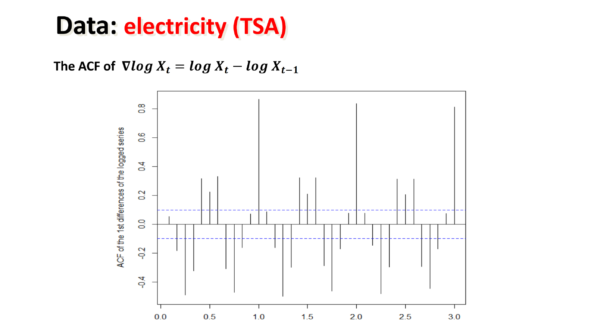
ACF ของ \(\nabla\log X_t\) ไม่ลดช้าแล้ว แต่มียอดสูงที่ lag 1.0, 2.0, 3.0 ของแกนนอน ซึ่งในข้อมูลรายเดือนหมายถึง lag 12, 24, 36 ค่าเท่ากับ 0.866, 0.836 และ 0.812 แปลว่าเดือนเดียวกันของแต่ละปียังสัมพันธ์กันมาก เพราะหน้าร้อนคนเปิดแอร์ใช้ไฟมาก23 ARIMA ธรรมดาจัดการแบบแผนนี้ไม่ได้ ต้องใช้ SARIMA ใน Lesson 9 การบ้านคือทำ ACF ของ \(X_t\) เดิมแล้วเทียบกับของ diff log24

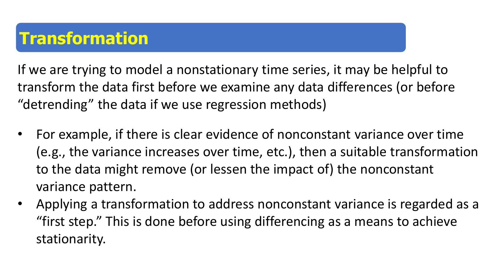


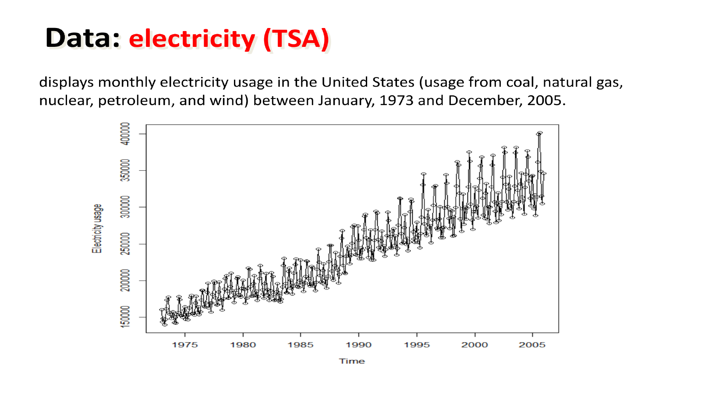
identification คือการหาค่า p และ q ที่เป็นไปได้25 ไม่ใช่คำตอบเดียว เครื่องมือมีสองกลุ่ม คือกราฟ (ACF/PACF/EACF) และตัวเลข (AIC/BIC) ทบทวนจาก Lesson 6 sample ACF หา q ของ MA, sample PACF หา p ของ AR และ ARMA ผสมต้องใช้ทั้ง ACF, PACF และ EACF ร่วมกัน ในคลิปพูดสลับแล้วแก้เอง26 วิธีจำคือตัวที่ตัดบอกอันดับ สัญญาณที่ชัดที่สุดของความไม่นิ่งคือ sample ACF ลดช้ามาก เพราะอนุกรมไม่นิ่ง "hang together" ค่าติดกันใกล้กันตลอด เช่น IMA(1,1) ในตอนที่ 1 ที่ ACF lag 10 ยังเป็น 0.537 กฎคือถ้ามี trend และ ACF ลดช้า ให้ difference ครั้งแรก ถ้า ACF ของผลต่างลดเร็วเหมือน ARMA ที่นิ่ง ให้ใช้ d = 1 แล้วหา p, q จากผลต่างนั้น ถ้าผลต่างครั้งแรกยังลดช้า เช่น IMA(2,2) (0.960, 0.929, 0.886) ให้ difference อีกครั้งเป็น d = 2 และแทบไม่ต้องใช้ d > 2 สรุปได้ว่า d = 1 เมื่อมี trend d = 2 เมื่อ trend แรงขึ้น หรืออาจต้อง log ด้วย27 ถ้าต้อง transform ให้ทำ "up front" ก่อน difference ตามตอนที่ 2
ADF test ใช้ตรวจความนิ่งแทนการดูด้วยตา สิ่งที่ห้ามลืมคือ H1 คือนิ่ง และ H0 คือไม่นิ่ง28 ตัวอย่างบนสไลด์คือ times.txt ได้ Dickey-Fuller = −7.1518, Lag order = 5 และ p-value = 0.01 ซึ่งน้อยกว่า 0.05 จึง reject H0 และสรุปว่านิ่ง ใช้ d = 0 เมื่อรันจริง R เตือนว่า p-value smaller than printed p-value คือค่าจริงน้อยกว่า 0.01 อีก Lag order 5 มาจากค่าเริ่มต้น \(\lfloor(n-1)^{1/3}\rfloor=\lfloor149^{1/3}\rfloor=5\) ข้อสังเกตคือสไลด์เขียนว่า adf.test อยู่ใน library TSA แต่คำสั่งนี้มาจาก package tseries (ใช้ใน Lesson 3)
เมื่อ ACF/PACF ให้หลายโมเดลที่เป็นไปได้ ต้องมีตัวเลขช่วยเลือก AIC (textbook Section 2.2 หน้า 53) คือ \(\mathrm{AIC}=-2\ln L+2k\) โดย L คือ likelihood สูงสุด และ k คือจำนวนพารามิเตอร์ likelihood เข้าใจง่าย ๆ ว่าโอกาสที่โมเดลนี้จะเกิด และ take log เพื่อบีบค่าใหญ่ ๆ แต่ทิศทางเหมือนเดิม29 เรื่อง k สไลด์เขียนว่าไม่นับ white noise variance แต่ intercept และ σ² ก็เป็นพารามิเตอร์ที่โมเดลประมาณเช่นกัน30 R นับแบบหลังนี้ ตรวจได้จาก ARMA(1,1) ของ times ที่ log likelihood = −247.66 ถ้า k = 4 (φ, θ, intercept, σ²) ได้ \(495.32+8=503.32\) ตรงกับ aic = 503.31 ที่ R รายงาน การนับต่างกันไม่เปลี่ยนการเลือกโมเดล เพราะทุกโมเดลถูกบวกค่าคงที่เท่ากัน คำถามว่า "AIC มากดีหรือน้อยดี" คำตอบคือยิ่งน้อยยิ่งดี31 เพราะ −2 ln L ยิ่งน้อยแปลว่า likelihood ยิ่งสูง ส่วน 2k คือ penalty ที่ไม่ให้โมเดลซับซ้อนเกินจำเป็น ตามหลัก parsimony "ให้มันเท่าที่จำเป็น" เช่น ARMA(2,1) ของ times มี −2 ln L = 491.28 ส่วน ARMA(2,2) ฟิตได้ดีขึ้นเล็กน้อย แต่ penalty เพิ่ม 2 ทำให้ AIC 502.35 สูงกว่า 501.28 จึงไม่คุ้มที่จะเพิ่มพารามิเตอร์ BIC เปลี่ยน penalty จาก 2 เป็น ln n ต่อพารามิเตอร์ เมื่อ n = 150 ได้ ln 150 = 5.01 ซึ่งหนักกว่า AIC ราว 2.5 เท่า BIC จึงเลือกโมเดลที่เล็กกว่า ซอฟต์แวร์บางตัวอย่าง SAS ใช้ +2 log L ทำให้ยิ่งมากยิ่งดี แต่ใน R ยิ่งน้อยยิ่งดี32
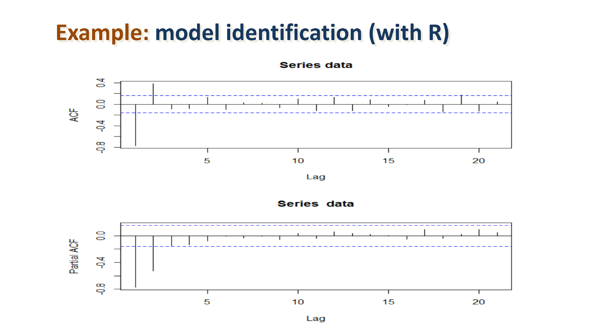
times.txt มี 150 ค่า mean 0.0198 แกว่งรอบศูนย์ไม่มี trend ความแกว่งใกล้เคียงกันตลอด และ ADF ยืนยันว่านิ่ง จึงใช้ d = 0 sample ACF คือ −0.771, 0.382, −0.090, −0.077 ทะลุเส้น ±0.163 ที่ lag 1, 2 จึงอาจเป็น MA(2) sample PACF คือ −0.771, −0.524, −0.153, −0.135 ทะลุเส้นชัดที่ lag 1, 2 และ lag 3 ใกล้เส้น จึงอาจเป็น AR(2) ข้อมูลจริงไม่ชัดเจน จึงตั้งไว้ว่า p เป็น 1 หรือ 2 และ q เป็น 1 หรือ 2 แล้วมีโมเดลอยู่ในใจ 2–3 ตัว33 จากนั้นฟิตทุกคู่ (p, q) ตั้งแต่ 0 ถึง 3 แล้วเก็บ AIC ลงตาราง โดยแถวคือ p และคอลัมน์คือ q ช่อง [1,1] คือ ARMA(0,0)34

AIC ต่ำสุดสามอันดับคือ ARMA(2,1) 501.2778 (แถว 3 คอลัมน์ 2), ARMA(1,2) 502.2742 และ ARMA(2,2) 502.349935 ส่วน BIC ต่ำสุดสามอันดับคือ ARMA(1,1) 515.3553, ARMA(2,1) 516.3310 และ ARMA(1,2) 517.3273 ARMA(2,1) และ ARMA(1,2) อยู่ในทั้งสองชุด แต่ BIC เลือก ARMA(1,1) ซึ่ง AIC ไม่เลือก เพราะ penalty ของ BIC หนักกว่า อีกจุดที่ควรสังเกตคือคอลัมน์แรก (q = 0, AR ล้วน) มี AIC สูงทุกแถว เช่น AR(1) 563.29 แปลว่าต้องมีส่วน MA ขั้นถัดไปคือนำ candidate ไปตรวจ diagnostic และเทียบความแม่นยำของการพยากรณ์ใน Lesson 8
table1 <- array(0, c(4,4)) # ตาราง 4×4 ไว้เก็บผล
for (i in 1:4) {
for (j in 1:4) {
aic <- AIC(arima(data, order=c(i-1,0,j-1), method="ML")) # p, q วิ่ง 0 ถึง 3
table1[i,j] <- aic
}
}
# BIC: AIC(arima(...), k = log(length(data))) ใส่ penalty log(n) แทน 2ขั้นตอนเลือกโมเดลทั้งหมดสรุปได้สามขั้น ขั้นแรกวาดกราฟอนุกรม ดู trend, seasonal, outlier และความแกว่งที่ไม่คงที่ ถ้าต้องแปลงให้ลองหลายแบบแล้วเลือกตัวที่ทำให้ความแกว่งคงที่ที่สุด และทำก่อน difference เสมอ เหมือน electricity ที่ log ก่อนแล้วจึง difference ขั้นที่สองดู ACF/PACF ของข้อมูลเดิมหรือที่แปลงแล้ว ถ้า ACF ลดช้ามากให้ difference แต่อย่า difference มากเกินไป36 เพราะ overdifferencing ทำให้ระบุโมเดลยาก เช่น difference white noise ที่นิ่งอยู่แล้วจะได้ MA(1) ที่ θ = −1 ซึ่ง ρ₁ = −0.5 เป็นโครงสร้างเทียมที่ข้อมูลเดิมไม่มี ขั้นที่สามใช้ ACF, PACF, EACF ของอนุกรมที่แปลงและ difference แล้วเทียบกับรูปแบบทฤษฎี p และ q มักไม่เกิน 4 (ไม่นับ seasonal) ข้อมูลที่น้อยกว่า 50 ค่าระบุโมเดลได้ยาก เพราะเส้นประ \(2/\sqrt{n}\) กว้าง เช่น n = 36 ได้ ±0.33 และใช้ AIC/BIC ประกอบควบคู่กับกราฟ37 หลังทำทุกขั้นแล้ว แทบไม่มีโมเดลเดียวที่ชัดเจน จะได้ candidate จำนวนน้อย แล้วต่อด้วย estimation, diagnostic และ forecast โดยเทียบกับโมเดลประเภทอื่นด้วย เช่น ETS เพราะต้องการตัวที่ดีที่สุด38 ตัวอย่าง times ได้ candidate คือ ARMA(2,1), ARMA(1,2), ARMA(2,2) และ ARMA(1,1)
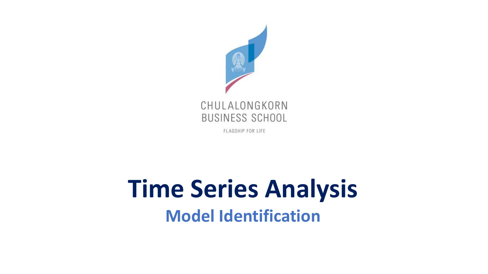


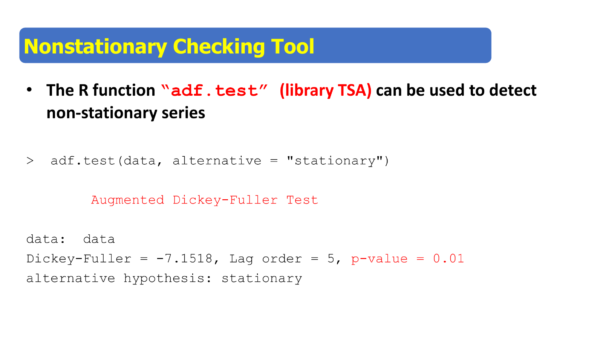


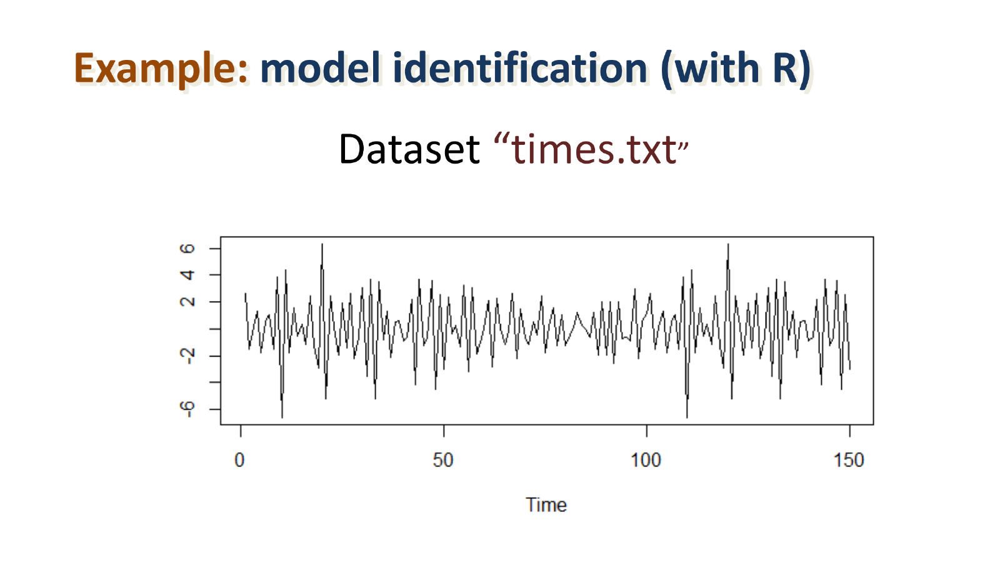


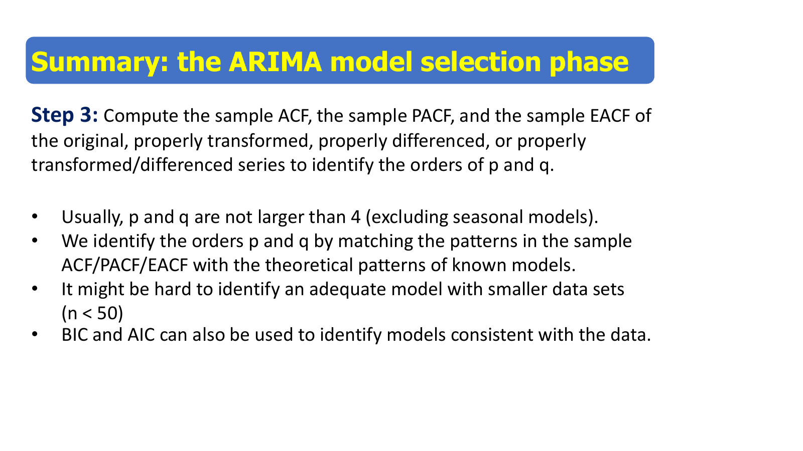
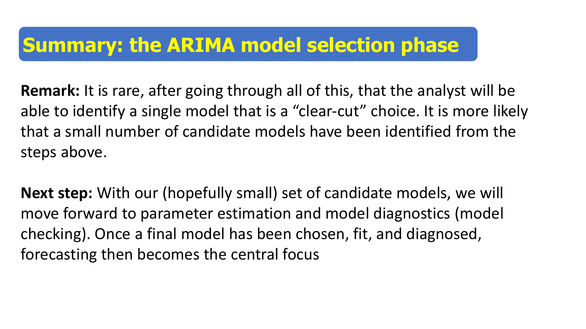
Class 7-2 อัดที่คณะ เขียนมือใต้กล้องตามใบงาน ARMA_properties ประเด็นคือ ARMA ที่เขียนได้ไม่ได้มีความหมายทุกตัว ต้องผ่านเงื่อนไขสามข้อ คือไม่ซ้ำซ้อน (no redundancy), causal และ invertible ผังของ Box-Jenkins บนใบงานคือ plot ตรวจความนิ่ง (ไม่นิ่งก็ difference) identification, estimation ตรวจว่าโมเดลเพียงพอไหม (ไม่พอก็กลับไปแก้) แล้วจึง forecast ซึ่งตรงกับตอนที่ 2–3 และ Lesson 8 ส่วนล่างของหน้านั้นนิยาม parameter redundancy ว่าถ้า Φ(z) และ θ(z) มีตัวประกอบร่วม ตัดทิ้งได้ และโมเดลจะเท่ากับโมเดลอันดับต่ำกว่า ใบงานเขียนสีแดงว่า "We will assume no redundancy" ตัวอย่างง่าย ๆ คือ \((1-0.5B)X_t=(1-0.5B)w_t\) ดูเหมือน ARMA(1,1) แต่ตัดแล้วเหลือ \(X_t=w_t\) คือ white noise ซึ่งเห็นแล้วใน Example (b) ของ Lesson 6
นิยามบนใบงานเขียนด้วยรากของพหุนาม causal ถ้า Φ(z) ≠ 0 สำหรับทุก |z| ≤ 1 คือรากทุกตัวของ Φ อยู่นอกวงกลมหนึ่งหน่วย แล้ว \(X_t\) เขียนได้ด้วย w ปัจจุบันและอดีต ส่วน invertible ถ้า θ(z) ≠ 0 สำหรับทุก |z| ≤ 1 แล้ว \(w_t\) เขียนได้ด้วย X ปัจจุบันและอดีต คือ \(X_t\) เป็น AR(∞) causality ตรวจด้วยหลักการเดียวกับ invertibility แต่ตรวจคนละฟังก์ชัน39 เพื่อเข้าใจว่าทำไมต้องมีเงื่อนไขนี้ ลองเขียน MA(1) เป็น AR(∞)
\(X_t=w_t-\theta w_{t-1}\) ซึ่งเป็นอันเดียวกับแบบบวก40
\(w_t=X_t+\theta w_{t-1}\) และ \(w_{t-1}=X_{t-1}+\theta w_{t-2}\) แทนไปเรื่อย ๆ ได้ \(w_t=X_t+\theta X_{t-1}+\theta^2X_{t-2}+\theta^3X_{t-3}+\dots\)
\(X_t=-\theta X_{t-1}-\theta^2X_{t-2}-\dots+w_t\) ซึ่งคล้าย AR ที่ยาวไม่สิ้นสุด
อนุกรม \(\theta^j\) ลู่เข้าก็ต่อเมื่อ |θ| < 1 ถ้า θ = 5 น้ำหนัก 5, 25, 125 ของอดีตโตขึ้นเรื่อย ๆ ซึ่งไม่มีความหมาย พารามิเตอร์จึงเป็นค่าอะไรก็ได้ไม่ได้
ทฤษฎีบทที่ต้องจดและใช้ได้กับทุก MA42 คือ MA(q) invertible เมื่อรากทุกตัวของ \(\theta(B)=1+\theta_1B+\dots+\theta_qB^q\) มีค่าสัมบูรณ์เกิน 1 และ AR(p) causal เมื่อรากทุกตัวของ \(\Phi(B)=1-\phi_1B-\dots-\phi_pB^p\) มีค่าสัมบูรณ์หรือ modulus เกิน 143 ถ้ามีรากตัวใดตัวหนึ่งน้อยกว่า 1 ถือว่าไม่ invertible เลย44 รากติดลบให้ดูค่าสัมบูรณ์ รากเชิงซ้อนดู modulus แต่ "ส่วนใหญ่จะเป็นจำนวนจริง" causal ของ AR คือเงื่อนไขเดียวกับความนิ่งใน Lesson 5–6 MA ทุกตัว causal เสมอ และ AR ทุกตัว invertible เสมอ เพราะไม่มีพหุนามอีกฝั่งให้ตรวจ คำถามที่ถามกันมาตั้งแต่ 10 ปีก่อนคือทำไมต้องแปลง MA(q) เป็น AR(∞) ในเมื่อ MA(q) ก็มีแค่ q พารามิเตอร์อยู่แล้ว45 คำตอบมีสามข้อ ข้อแรกคือ identifiability เพราะ θ กับ 1/θ ให้ ACF เท่ากัน ข้อมูลแยกไม่ออก ต้องมีกฎเลือกตัวเดียว ข้อสองคือการคำนวณ เราไม่เห็น w แต่ถ้า invertible จะคำนวณ \(w_t\) จาก X ในอดีตได้ จึงหา residual, likelihood และค่าพยากรณ์ได้ ข้อสามคือซอฟต์แวร์อย่าง R บังคับให้ θ ที่ประมาณได้อยู่ในบริเวณ invertible

โจทย์สี่ข้อของใบงานเป็นรูปแบบที่ออกสอบได้ และมีเฉลยในห้องทุกข้อ46 ขั้นตอนทุกข้อคือจัดรูปให้เป็น \(\Phi(B)X_t=\theta(B)w_t\) ก่อน เปลี่ยน B เป็น x ตั้งเท่ากับศูนย์ ระบุ a, b, c ให้ชัด ตรวจ \(b^2-4ac\) ก่อนแทนสูตร และตรวจด้านที่ง่ายก่อน
\((1-0.3B)X_t=w_t\) ต้องจัดรูปเพราะพหุนามนี้คือ characteristic function47 \(1-0.3x=0\) ได้ราก 3.33 > 1 จึง causal ไม่มีส่วน MA จึง invertible
\(\theta(x)=1-1.3x+0.4x^2\) a = 0.4, b = −1.3, c = 1 \(b^2-4ac=1.69-1.6=0.09>0\) รากจริง \(x=\dfrac{1.3\pm0.3}{0.8}\) ได้ 2 และ 1.25 เกิน 1 ทั้งคู่จึง invertible และเป็น MA จึง causal48
\((1-0.5B)X_t=(1-0.3B+1.2B^2)w_t\) ตรวจด้านซ้ายก่อนเพราะง่าย ราก 2 > 1 จึง causal ด้านขวา a = 1.2, b = −0.3, c = 1 \(D=0.09-4.8=-4.71<0\) รากเชิงซ้อน \(\dfrac{0.3\pm i\sqrt{4.71}}{2.4}=0.125\pm0.904i\) modulus \(\sqrt{0.125^2+0.904^2}=0.913<1\) จึงไม่ invertible49
ดูคล้าย ARMA(2,2) \((1-0.4B-0.45B^2)X_t=(1+B+0.25B^2)w_t\) แยกตัวประกอบได้ \((1+0.5B)(1-0.9B)X_t=(1+0.5B)^2w_t\) มีตัวประกอบร่วมจึงตัดทิ้ง เหลือ \((1-0.9B)X_t=(1+0.5B)w_t\) ซึ่งจริง ๆ คือ ARMA(1,1) เพราะ redundant50 ราก 1.11 > 1 จึง causal และราก −2 มีค่าสัมบูรณ์ 2 > 1 จึง invertible
เมื่อ causal เขียนได้ \(X_t=\psi(B)w_t\) โดย \(\psi(B)=\theta(B)/\Phi(B)\) และเมื่อ invertible เขียนได้ \(w_t=\pi(B)X_t\) โดย \(\pi(B)=\Phi(B)/\theta(B)\) ซึ่งแค่สลับเศษส่วนกัน53 ψ(B) และ π(B) เป็นฟังก์ชันของ B ไม่ใช่ค่า π ปัญหาคือการหารพหุนาม ถ้าทำตรง ๆ จะติดอยู่ที่เศษส่วนและไม่รู้ว่าจะแปลงเป็นอนุกรมอย่างไร54 ต้องใช้อนุกรมเรขาคณิต \((1-az)^{-1}=1+az+a^2z^2+\dots\) เมื่อ |az| < 1
\(\psi(z)=(1+0.5z)(1-0.9z)^{-1}=(1+0.5z)(1+0.9z+0.81z^2+0.729z^3+\dots)\)
\(z^1\): 0.9 + 0.5 = 1.4; \(z^2\): 0.81 + 0.45 = 1.26 = 1.4(0.9); \(z^3\): 0.729 + 0.405 = 1.134 = 1.4(0.9)²
\(X_t=(1+1.4B+1.4(0.9)B^2+1.4(0.9)^2B^3+\dots)w_t\) ถ้าเขียนในข้อสอบแค่นี้ได้เต็ม เพราะหาแบบแผนเจอแล้ว55 แบบหนังสือ "ให้ดูเป็น professional" คือ \(X_t=w_t+\sum_{j=1}^\infty1.4(0.9)^{j-1}w_{t-j}\)
ARMAtoMA(ar = 0.9, ma = 0.5, lag.max = 5) ได้ 1.4, 1.26, 1.134, 1.0206, 0.9185\(\pi(z)=(1-0.9z)(1+0.5z)^{-1}=(1-0.9z)(1-0.5z+0.25z^2-0.125z^3+\dots)\)56
\(z^1\): −0.5 − 0.9 = −1.4; \(z^2\): 0.25 + 0.45 = 0.7 = −1.4(−0.5); \(z^3\): −0.125 − 0.225 = −0.35 = −1.4(−0.5)²
\(w_t=X_t-1.4X_{t-1}+0.7X_{t-2}-0.35X_{t-3}+\dots=X_t-1.4\sum_{j=1}^\infty(-0.5)^{j-1}X_{t-j}\)
EACF (extended autocorrelation function) จาก Cryer and Chan ใช้เมื่อ p และ q ไม่รู้ทั้งคู่ ตารางทฤษฎีของ ARMA(1,1) มี x (ไม่เป็นศูนย์) ทั้งแถว 0 และคอลัมน์ 0 ส่วนที่เหลือเป็น 0 เป็นรูปลิ่มสามเหลี่ยมที่มุมบนซ้ายอยู่ที่แถว 1 คอลัมน์ 1 แถวคือ AR (p) และคอลัมน์คือ MA (q) ในห้องไม่แน่ใจว่าอันไหนเป็นแถว58 แต่หัวตารางของ TSA เขียนชัดว่า AR/MA ARMA(2,2) มีมุมลิ่มที่ (2,2) แถว 2 เริ่มเป็น 0 ที่คอลัมน์ 2 แถว 3 เริ่มที่คอลัมน์ 3 และแถว 4 เริ่มที่คอลัมน์ 4 ขอบเอียงของลิ่มขยับขวาหนึ่งช่องต่อแถว เพราะถ้าใส่ AR มากเกินจริง จะต้องใช้ MA เพิ่มตามเพื่อชดเชย ช่องที่ "ควรเป็นศูนย์" จึงขยับไปเรื่อย ๆ ARMA(2,1) มีมุมที่ (2,1) ใบงานเตือนว่าตารางทฤษฎีเป็นผลเมื่อข้อมูลมีมากไม่จำกัด sample EACF จากข้อมูลจริง "may be completely ambiguous" โดยเฉพาะเมื่อ n น้อย ผล ARMA(1,1) ที่ n = 200 บนใบงานมีแถว 1 เป็น x แล้วตามด้วย o ทั้งแถว จึงเห็นมุมที่ (1,1) ตรงกับโมเดลจริง ส่วนผล ARMA(2,2) และ ARMA(3,3) มี x กระจายในบริเวณที่ควรเป็น o หลายจุด จึงหามุมลิ่มที่ชัดไม่ได้ ตรงกับคำเตือนใน Lesson 6 ว่า "พอทำ data จริงจะดูแย่มาก" และ ARMA(3,3) ยิ่งมี x มากในแถวบน ผลที่รันใน Lesson 6 ก็เช่นกัน ARMA(2,2) ให้ลิ่มที่สะอาดที่สุดที่ (0,3) ซึ่งผิดจากโมเดลจริง EACF จึงใช้ช่วยตั้ง candidate ได้ แต่ต้องใช้ร่วมกับ AIC/BIC และ diagnostic เสมอ

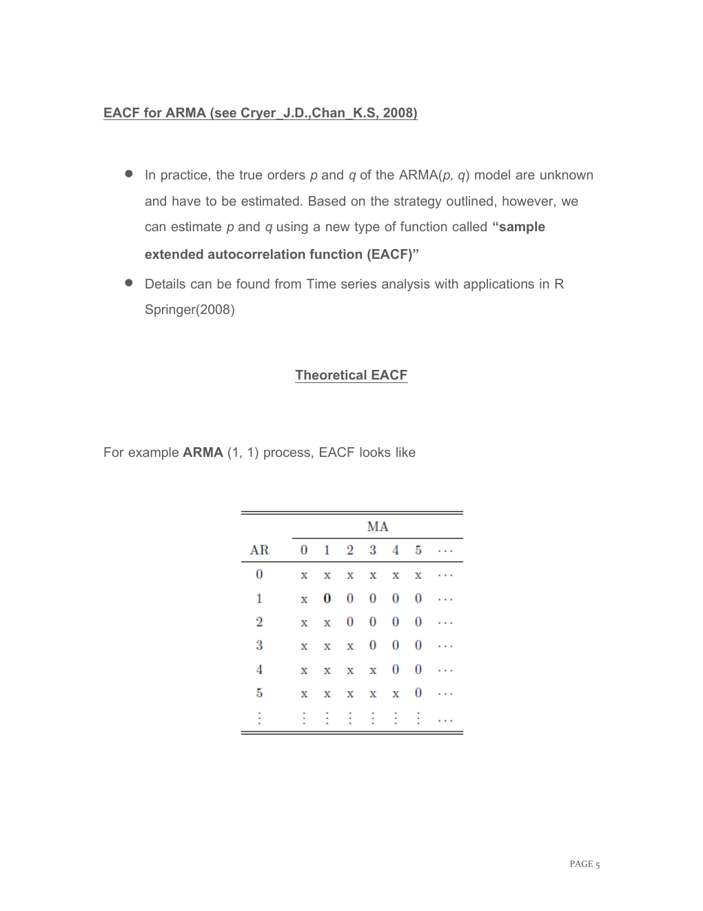
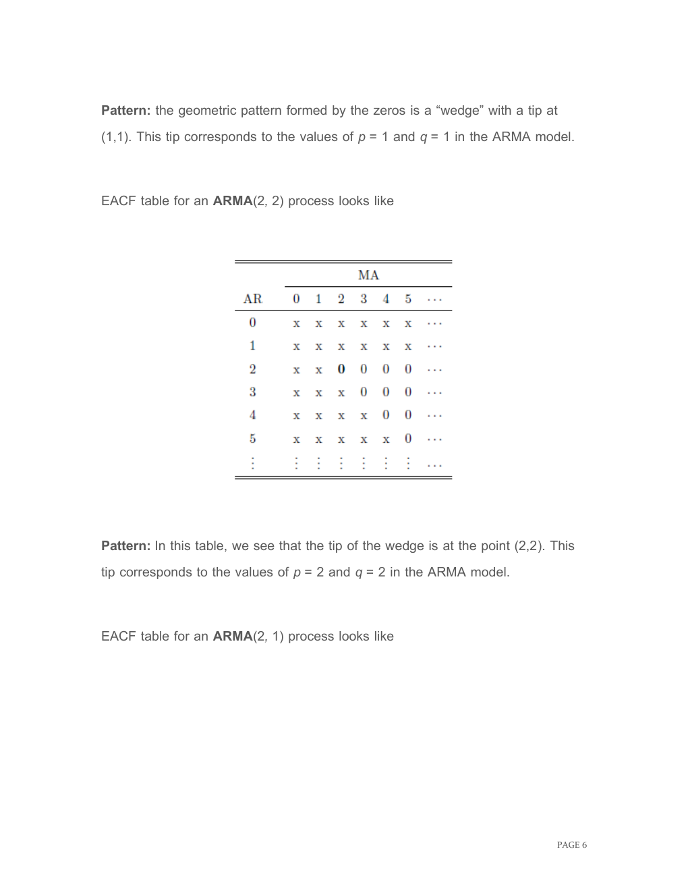

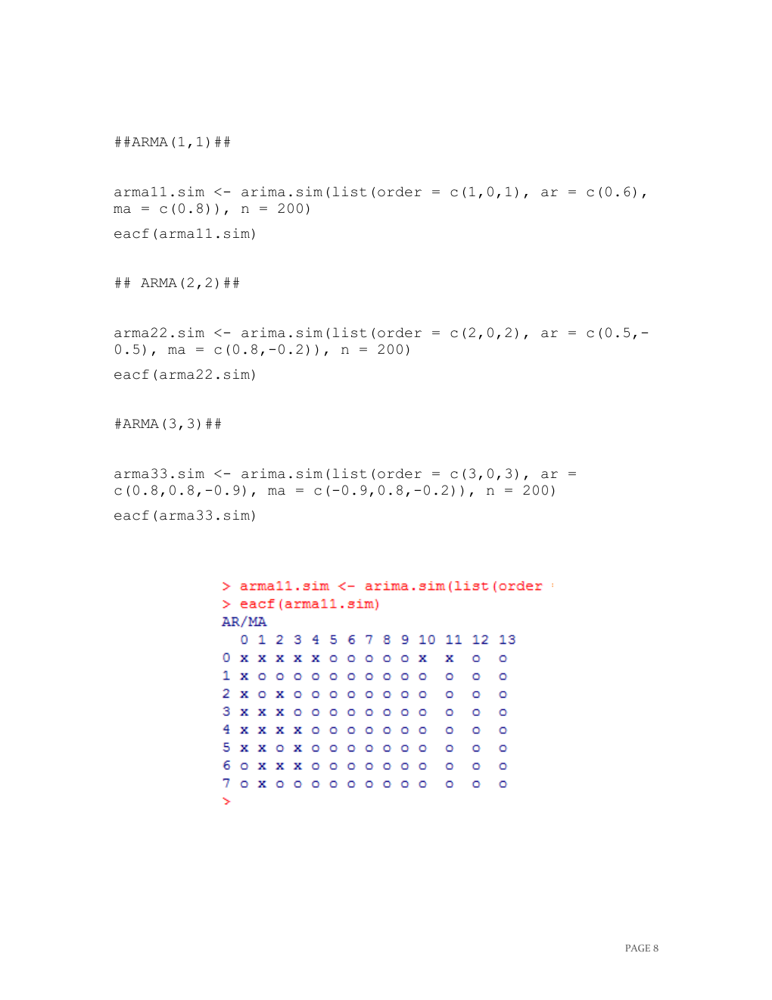

เนื้อหาส่วนนี้สอนต้นคาบ Class 8 เมื่อได้ candidate แล้วต้องหาค่า φ, θ และ σ² estimation คือการ "เติม hat" เช่น μ̂ = x̄59 ถ้าไม่ซับซ้อนก็ให้โปรแกรมประมาณให้ได้เลย60 แต่ข้อสอบเก่ามีการคำนวณมืออยู่บ้าง61 วิธีจากวิชา statistical inference มีสองแบบ62 MLE คือหาอนุพันธ์ของ likelihood แล้วตั้งเท่ากับศูนย์ ถ้าไม่มีสูตรปิดต้องใช้วิธีเชิงตัวเลขเช่น Newton-Raphson ส่วน method of moments (MOM) คือตั้ง moment ของประชากรเท่ากับของตัวอย่าง เช่น E(X) = x̄ สไลด์วางตำแหน่งของขั้นนี้ไว้ว่า วาดกราฟ แปลงให้ residual นิ่ง (ตัด trend/seasonal, difference, log หรือ √) แล้ว 3. Fit model to residuals. จากนั้นพยากรณ์และแปลงกลับ model validation หลังจากนั้นเป็นขั้นที่มนุษย์ยังต้องทำเอง63
คำถามบนสไลด์ "Can you write down the likelihood" ชี้ว่า likelihood ที่แท้จริงของอนุกรมเวลาเขียนยาก เพราะค่าทุกตัวสัมพันธ์กัน ไม่ใช่ผลคูณของความน่าจะเป็นที่อิสระกันเหมือนวิชาสถิติทั่วไป และต้องคำนวณมาก MA(1) ใช้การแปลงเชิงเส้นหลายตัวแปร ส่วน AR(1) ใช้โครงสร้าง Markov ได้ pseudo-likelihood ค่าประมาณจาก likelihood แบบประมาณจึงไม่แม่นเท่า MLE จริงเมื่อข้อมูลมีจำกัด เหตุผลเหล่านี้นำไปสู่ method of moments estimators ซึ่งคำนวณง่ายกว่ามาก และเป็นวิธีเดียวที่สอนให้คำนวณ เพราะ MLE ต้องรู้ distribution64 MOM แบบที่ใช้ในวิชานี้คือเจอ γ ให้แทนด้วย γ̂ จากตัวอย่าง และเจอ ρ ให้แทนด้วย ρ̂65 สไลด์เขียนว่าเลือก φ ที่ทำให้ \(\gamma(h)=\hat\gamma(h)\) สำหรับ h = 0, …, p
\(\gamma_1=\phi\gamma_0\) จึงได้ \(\phi=\gamma_1/\gamma_0=\rho_1\) และจาก \(\gamma_0=\sigma^2/(1-\phi^2)\) ได้ \(\sigma^2=\gamma_0(1-\phi^2)\)66
\(\hat\phi=\hat\rho_1\) และ \(\hat\sigma^2=\hat\gamma_0(1-\hat\phi^2)\)
acf(data, type="covariance") ได้ \(\hat\gamma_0=6.0495\), \(\hat\gamma_1=-4.6641\) จึงได้ \(\hat\phi=-0.771\) และ \(\hat\sigma^2=6.0495(1-0.5944)=2.4534\)
ar.yw(data, order=1) ได้ ar = −0.7710 และ var.pred = 2.4866 ตรงกับที่อ่านในห้อง (−0.770 และ 2.486594)
สำหรับ AR(p) ทั่วไป สมการ Yule-Walker \(\gamma(h)=\phi_1\gamma(h-1)+\dots+\phi_p\gamma(h-p)\) สำหรับ h = 1, …, p เขียนเป็นเมทริกซ์ \(\Gamma_p\phi=\gamma_p\) แทนด้วยค่าตัวอย่างได้ \(\hat\phi=\hat\Gamma_p^{-1}\hat\gamma_p\) และ \(\hat\sigma^2=\hat\gamma(0)-\hat\gamma_p'\hat\Gamma_p^{-1}\hat\gamma_p\) สำหรับ AR(2) หารด้วย γ₀ แล้วแก้สองสมการได้สูตรปิด \(\hat\phi_2=\dfrac{\hat\rho_2-\hat\rho_1^2}{1-\hat\rho_1^2}\) และ \(\hat\phi_1=\dfrac{\hat\rho_1(1-\hat\rho_2)}{1-\hat\rho_1^2}\) กับ times ได้ \(\hat\phi_2=(0.3819-0.5944)/0.4056=-0.524\) และ \(\hat\phi_1=-0.771(0.6181)/0.4056=-1.175\) ตรงกับ ar.yw(data, order.max=2, aic=FALSE) ที่ได้ −1.1751 และ −0.5242 \(\hat\phi_2\) เท่ากับ PACF lag 2 พอดี Yule-Walker เหมาะกับ AR(p) ส่วน MA(q) ใช้ innovations algorithm โดยแทน γ ด้วย γ̂ เช่นกัน และสำหรับ ARMA(p,q) วิธี MOM Not efficient คือค่าประมาณมีความแปรปรวนสูง จึงไม่ค่อยนิยม ในทางปฏิบัติใช้ MLE68 ข้อสอบเก่าเคยออก MOM ของ MA(1)69
\(\hat\rho_1=\dfrac{\hat\theta}{1+\hat\theta^2}\) ย้ายข้างแล้วเป็นพหุนามกำลังสอง70
\(\hat\rho_1\hat\theta^2-\hat\theta+\hat\rho_1=0\) จึงได้ \(\hat\theta=\dfrac{1\pm\sqrt{1-4\hat\rho_1^2}}{2\hat\rho_1}\)
\(\sqrt{1-0.64}=0.6\) ได้ \(\hat\theta=(1\pm0.6)/0.8\) คือ 2 หรือ 0.5 ผลคูณของสองรากเท่ากับ 1 เสมอ (θ กับ 1/θ ในตอนที่ 4)
เลือก |θ̂| < 1 เพื่อให้ invertible คือ \(\hat\theta=\dfrac{1-\sqrt{1-4\hat\rho_1^2}}{2\hat\rho_1}=0.5\)
การประมาณพารามิเตอร์ของ Box-Jenkins เป็นปัญหา non-linear ที่ซับซ้อน ควรให้ซอฟต์แวร์ทำ และ MLE เป็นวิธีที่นิยม likelihood คือโอกาสในการเกิดของโมเดล และ MLE คือค่าพารามิเตอร์ที่ทำให้โอกาสนั้นสูงสุด สิ่งที่ต้องจำคือกดให้โปรแกรมประมาณก็พอ71 ถ้า \(X=(X_1,\dots,X_n)'\) มาจาก Gaussian ARMA ที่ mean เป็นศูนย์ likelihood คือ density ของ normal หลายตัวแปร \(L=(2\pi)^{-n/2}|\Gamma_n|^{-1/2}\exp(-\tfrac12X'\Gamma_n^{-1}X)\) โดย \(\Gamma_n\) คือเมทริกซ์ covariance ขนาด n × n ที่ขึ้นกับ φ, θ, σ² เช่น n = 150 ต้อง invert เมทริกซ์ 150 × 150 ทุกครั้งที่ลองค่าพารามิเตอร์ใหม่ จึงต้องให้คอมพิวเตอร์ทำ การหาค่าสูงสุดใช้ Newton-Raphson ซึ่งรายละเอียดในหนังสือหน้า 124–128 เป็นส่วนเสริม MLE มีข้อดีคือค่าประมาณมีความแปรปรวนต่ำ (efficient) สมมติฐาน Gaussian มักสมเหตุสมผล และแม้ข้อมูลไม่ใช่ Gaussian การแจกแจงเชิงเส้นกำกับของค่าประมาณก็เหมือนกรณี Gaussian ข้อเสียคือ optimization ยาก และต้องเลือกจุดเริ่มที่ดี ซึ่งมักใช้ค่าจาก MOM เป็นจุดเริ่ม แนวคิดจึงถูกต้องแต่ optimization ลำบาก72

output ของ ARMA(1,1) กับ times คือ ar1 = −0.6169 (s.e. 0.0686), ma1 = −0.7233 (s.e. 0.0543), intercept = 0.0235 (s.e. 0.0179), σ² = 1.57, log likelihood = −247.66 และ aic = 503.3173 ar1 คือ φ₁ ma1 คือ θ₁ (convention บวก) และ intercept คือ mean μ เพราะอนุกรมอาจไม่ได้แกว่งรอบศูนย์แต่เลื่อนขึ้นมา74 และไม่ต้องใส่ method="ML" เพราะเป็นค่าเริ่มต้นอยู่แล้ว
\((1+0.6169B)(X_t-0.0235)=(1-0.7233B)w_t\) โดย \(w_t\sim N(0,1.57)\) เขียนบรรทัดนี้บรรทัดเดียวในข้อสอบก็ได้เต็ม และทุกครั้งที่มี X_t ต้องลบ intercept75
ราก AR = 1/0.6169 → |−1.62| > 1 และราก MA = 1/0.7233 = 1.38 > 1 ผ่านทั้งคู่
φ̂: −0.6169/0.0686 = −9.0, θ̂: −0.7233/0.0543 = −13.3 มีนัยสำคัญมาก intercept: 0.0235/0.0179 = 1.31 น้อยกว่า 2 จึงไม่ต่างจากศูนย์
MLE ของ AR(1) ได้ ar1 = −0.7795 (Yule-Walker −0.7710) σ² = 2.39 และ aic = 563.29 ARMA(1,1) มี σ² เล็กกว่าและ AIC ต่ำกว่า 60 หน่วย

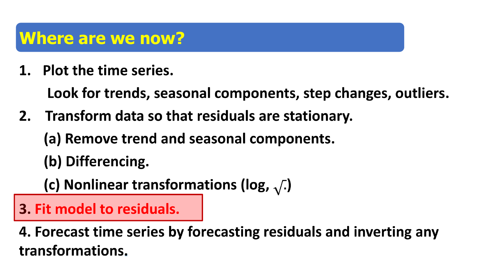
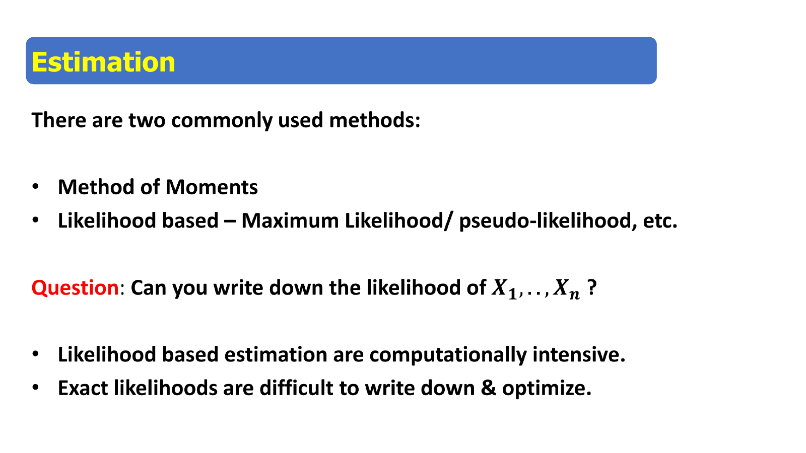
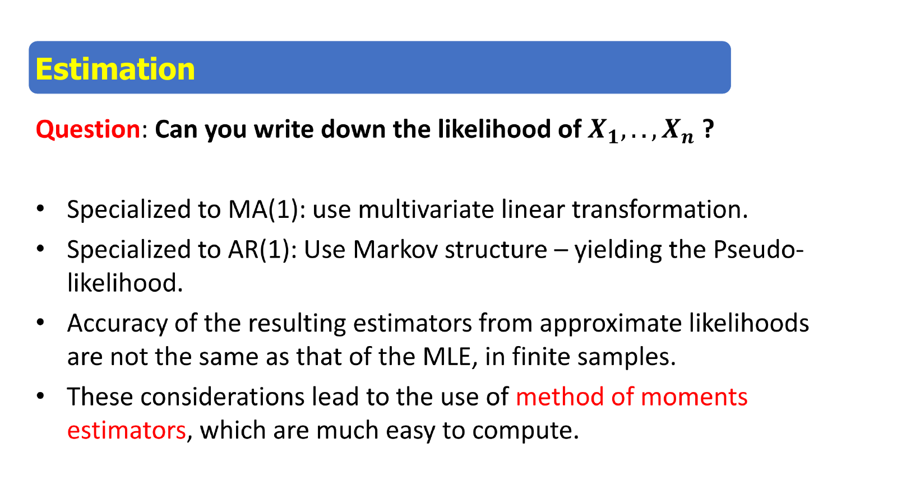

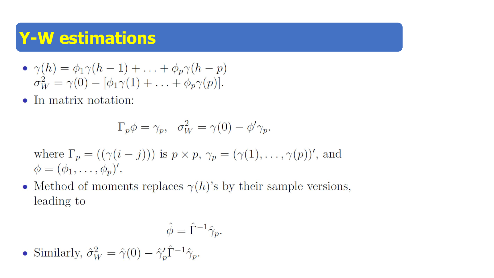

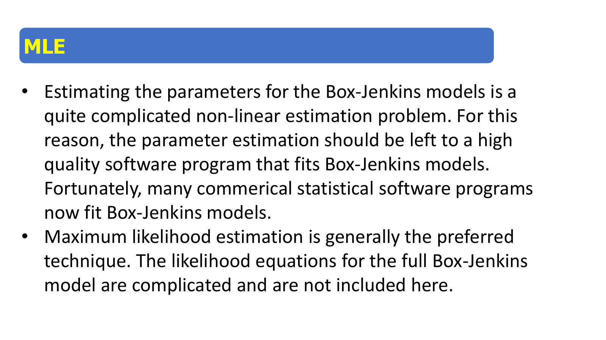
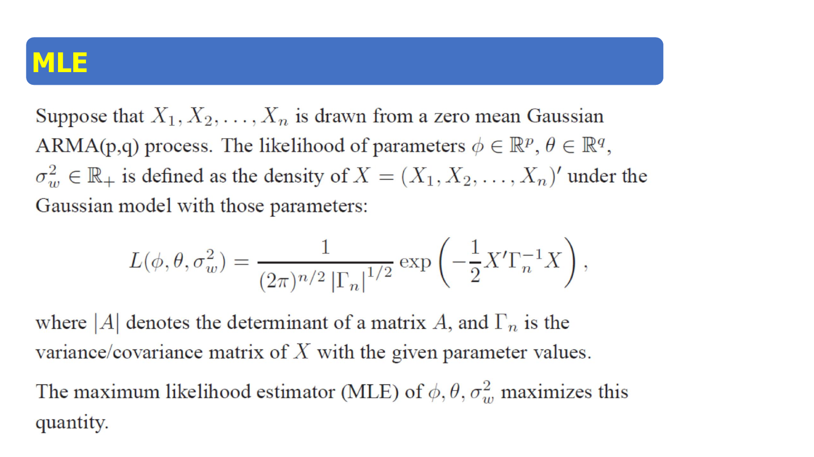
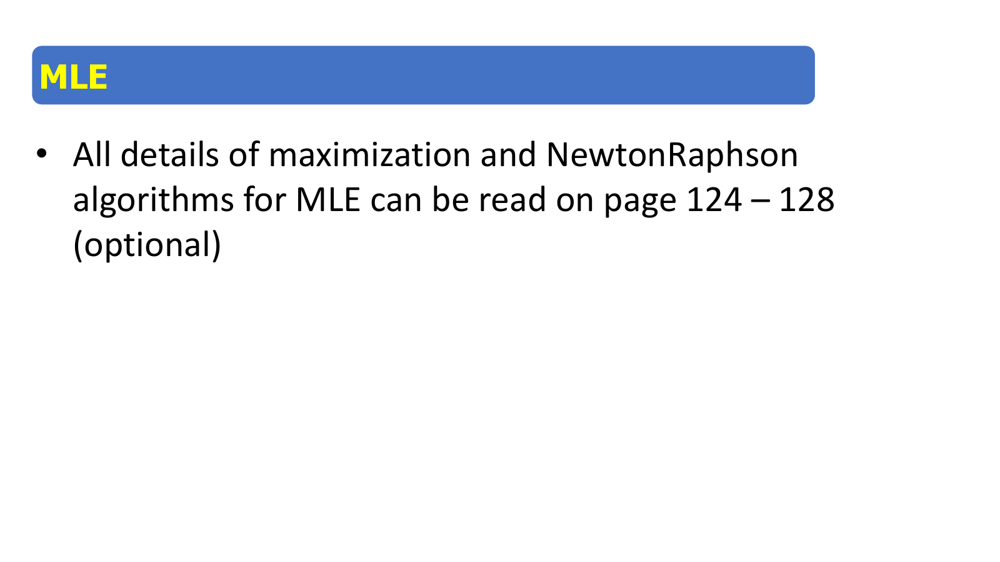
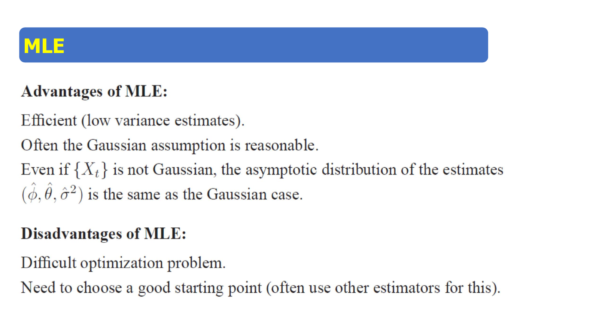
หน้าแบบฝึกมีควิซ 5 พร้อมเฉลย ลองฝึกต่อในแบบฝึก Lesson 7 หรืออ่านต่อ Lesson 8 — Diagnostic และการพยากรณ์
ตัวเลขยกในเนื้อหาชี้มาที่รายการนี้ แต่ละรายการระบุคลาสและนาทีของคลิป พร้อมถ้อยคำในคลิปเมื่อมี
| หน้า | เนื้อหา | อยู่ในตอน |
|---|---|---|
| 1–4 | ปก, ARIMA(0,1,1) กับ SES, double smoothing | ตอน 1 |
| 5–12 | Transformation, Box-Cox, electricity | ตอน 2 |
| 13–27 | Model identification, d, ADF, AIC, BIC, times.txt, สรุปขั้นตอนเลือกโมเดล | ตอน 3 |
| 28–39 | Estimation, MOM, Yule-Walker, MLE และ output ของ arima() | ตอน 5 |
| ใบงาน ARMA_properties หน้า | เนื้อหา | อยู่ในตอน |
|---|---|---|
| 1 | ปก Time Series Analysis 2603630 | etc — ปก |
| 2–3 | ทบทวน AR(1), นิยาม PACF, ตาราง ACF/PACF | ตอน 1 |
| 4–10 | Box-Jenkins process, redundancy, causality, invertibility, โจทย์สี่ข้อ, EACF ทฤษฎี, sample EACF และ R codes | ตอน 4 |
แหล่งอื่นที่ใช้: Class 7-1 ทั้งคลิป (0:00–0:47, ตอน 1–3), Class 7-2 ทั้งคลิป (0:00–1:02, ตอน 4), Class 8 ช่วง 0:00–0:26 (estimation) และ 1:07–1:08 (การเขียนโมเดลจาก output) (ตอน 5), ไฟล์ R_codes.txt, times.txt, quiz_5.pdf (CLASS 7), ARMA_properties.pdf และ EXERCISE.pdf (CLASS 6)